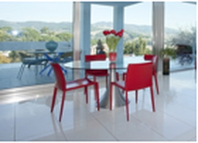

GENOME
GenerativE Neuro-SymbOlic Visual Reasoning by Growing and Reusing ModulEs
*Equal contribution
Abstract
Recent works have shown that Large Language Models (LLMs) could empower traditional neuro-symbolic models via programming capabilities to translate languages into module descriptions, thus achieving strong visual reasoning results while maintaining the model's transparency and efficiency. However, these models usually exhaustively generate the entire code snippet given each new instance of a task, which is extremely ineffective. On the contrary, human beings gradually acquire knowledge that can be reused and grow into more profound skills for fast generalization to new tasks since we are an infant. Inspired by this, we propose generative neuro-symbolic visual reasoning by growing and reusing modules. Specifically, our model consists of three unique stages, module initialization, module generation, and module execution. First, given a vision-language task, we adopt LLMs to examine whether we could reuse and grow over established modules to handle this new task. If not, we initialize a new module needed by the task and specify the inputs and outputs of this new module. After that, the new module is created by querying LLMs to generate corresponding code snippets that match the requirements. In order to get a better sense of the new module's ability, we treat few-shot training examples as test cases to see if our new module could pass these cases. If yes, the new module is added to the module library for future reuse. Finally, we evaluate the performance of our model on the testing set by executing the parsed programs with the newly made visual modules to get the results. We find the proposed GENOME model possesses several advantages. First, it performs competitively on standard tasks like visual question answering and referring expression comprehension; Second, the visual modules learned from one task can be seamlessly transferred to new tasks; Last but not least, it is able to adapt to new visual reasoning tasks by observing a few training examples and reusing modules.
Three Stages: Initialize, Generate, Execute
The paper’s running example, step by step: GENOME learns a Compare_material module from a training question, then reuses it on a new one. Click a stage, or let it play.

A: Yes.
class Compare_material(): """ Input: image, box0, box1 Output: a bool, same material? """
box0=Loc(image, object='chair')
box1=Loc(image, object='table')
answer0=Compare_material(image, box0, box1)
final_answer=Eval("'no' if answer0 else 'yes'")
class Compare_material(): def execution(self, image, box0, box1): # code written by the LLM ...
box0=Loc(image, object='cup')
box1=Loc(image, object='spoon')
answer0=Compare_material(image, box0, box1)
Module Initialization
Given training examples of a task, the LLM checks whether the existing modules can handle them. If not, it proposes the signature (inputs and outputs) of each new module and parses every question into operation steps, which become the module's test cases.
Module Generation
The LLM writes the module's code from its signature, runs it on the test cases and debugs it from the errors. A module joins the library only if it passes enough of its test cases.
Module Execution
At test time the LLM parses each question into a program over the module library, and the program is executed on the image to produce the answer.
Show the paper’s overview video
Competitive, Transferable, Few-Shot
On GQA and RefCOCO, GENOME, VisProg and ViperGPT all use the same LLM (gpt-3.5-turbo-instruct), since the Codex API used by earlier work is deprecated.
| Setting | Benchmark | Baseline | GENOME |
|---|---|---|---|
| Standard tasks | GQA | VisProg 45.4 · ViperGPT 38.2 | 45.6 |
| RefCOCO | ViperGPT 62.4 | 69.2 | |
| Module transfer | Image editing | VisProg 16.7 | 55.3 |
| Few-shot new tasks | Raven (Center / L-R / U-D) | ResNet+DRT 58.1 / 65.8 / 67.1 | 80.1 / 67.6 / 69.1 |
| MEWL (Shape / Color / Material) | Aloe 34.2 / 33.2 / 31.0 | 43.7 / 45.3 / 41.0 |
Accuracy (%) from the paper. Knowledge-based object tagging results (precision, recall and F1) are in the paper.
Competitive on standard tasks
On par with VisProg on GQA and ahead of ViperGPT on RefCOCO, with transparent programs.
Modules transfer
Modules learned on GQA and RefCOCO carry over to image editing and knowledge tagging.
Few-shot adaptation
New reasoning tasks such as Raven and MEWL are learned from a few examples by growing and reusing modules.
GENOME on Six Tasks
Pick a task to see the generated program and the modules it calls. Play the animation, or click the figure to enlarge it.
From Visual Modules to Agent Tools
GENOME and ToolSmith share one idea: instead of hand-writing every capability, let an LLM write new code from experience, verify it, and keep it for reuse.
GENOME
An LLM writes neuro-symbolic visual modules from a few training examples, tests them, and reuses them across visual reasoning tasks.
ToolSmith
A multimodal search agent grows new Python tools from its own failed trajectories, admits them through two verification gates, and retrieves them for each question.
Visit ToolSmith →BibTeX
@inproceedings{chen2024genome,
title={Genome: generative neuro-symbolic visual reasoning by growing and reusing modules},
author={Chen, Zhenfang and Sun, Rui and Liu, Wenjun and Hong, Yining and Gan, Chuang},
booktitle={International Conference on Learning Representations},
volume={2024},
pages={2012--2039},
year={2024}
}